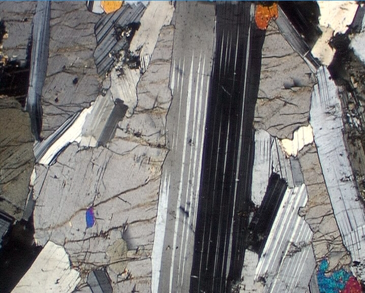
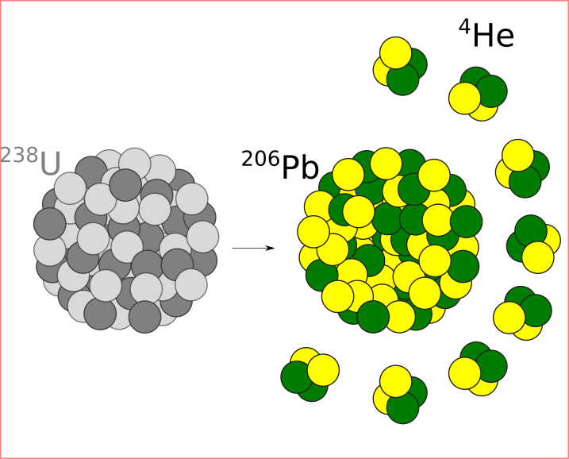

|

|
An interactive introduction to rock and mineral identification in hand
specimen and thin section, using a virtual
petrographic microscope with embedded YouTube videos.
|
| |
|

|
Introduction to
Geochronology. Covers the basic principles of radioactive decay,
mass spectrometry and isotope dilution before discussing the most
common geochronometers in use today, including radiocarbon, Rb-Sr,
Sm-Nd, U-Pb, Pb-Pb, K-Ar, Ar-Ar, U-Th-He, fission tracks, cosmogenic
nuclides and U-series. Practical exercises accompany the theoretical
introduction, including five Matlab sessions in which simplified yet
realistic datasets are processed. A printable PDF version can be
downloaded from EarthArXiv.
|
| |

|
Statistics for Geoscientists.
Provides a general introduction to mathematical statistics, with a
specific focus on the Geosciences. It covers both theoretical and
practical aspects of the subject, including probability,
distributions, hypothesis tests, regression, error propagation,
supervised and unsupervised learning, as well as the treatment of
compositional, directional and spatial data. The practicals use
the R programming language. A printable PDF version of the
notes is provided here.
|
| |